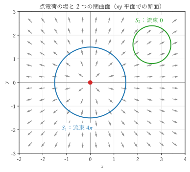

第 14 章 ガウスの発散定理
第 6 章では、発散を「微小な直方体から出ていく正味の流出量を体積で割ったもの」として導いた。この章で扱うガウスの発散定理は、これを有限の大きさの立体に広げたものであり、閉曲面から出ていく流束が、内部の発散の体積積分に等しいことを主張する。この章では、定理の内容と直観的な説明、座標によらない発散の定義を説明し、両辺を数値で計算して一致を確かめる。応用として、電場のガウスの法則と連続の式を導く。
ガウスの発散定理
空間の有界な立体 \(V\) と、その境界である閉曲面 \(\partial V\) を考える。閉曲面の向きは、外向き（立体の内部から外部へ向かう向き）を正とし、外向きの単位法線ベクトルを \(\bm{n}\)、ベクトル面素を \(d\bm{S} = \bm{n} \, dS\) とする。
ベクトル場 \(\bm{F}\) の成分が、\(V\) とその境界を含む範囲で連続な偏導関数を持つとき、次の式が成り立つ。これをガウスの発散定理という。単に発散定理、またはガウスの定理ともいう。
左辺は閉曲面全体を通って外へ出ていく流束（第 12 章）、右辺は立体の内部での発散の体積積分である。言葉で書くと、次のようになる。
閉曲面から出ていく正味の量 ＝ 内部の湧き出しの合計
たとえば、\(\bm{F}\) を水の流れの速度とすると、左辺は単位時間に閉曲面から流れ出る水の体積である。内部に水の湧き出し口（発散が正の場所）があれば、その分だけ水が外へ出ていく。
注釈
閉曲面上の面積分は、閉曲面であることを示すために ∯ という記号で書くことも多い。本書では \(\iint_{\partial V}\) と書き、積分範囲 \(\partial V\) が閉曲面であることで区別する。
微小な直方体による説明
第 6 章では、微小な直方体 \(\Delta V = \Delta x \, \Delta y \, \Delta z\) の 6 つの面から出ていく流束の合計が、近似的に \((\nabla \cdot \bm{F}) \, \Delta V\) になることを見た。これは、ガウスの発散定理を微小な直方体に適用したものに当たる。
立体 \(V\) を微小な直方体に分割し、各直方体から出ていく流束を足し合わせる。隣り合う 2 つの直方体が共有する面では、一方の直方体にとっての外向きの法線ベクトルは、もう一方にとっては内向きである。そのため、共有する面を通る流束は、一方の直方体ではプラス、もう一方ではマイナスに数えられ、打ち消し合う。足し合わせた後に残るのは、どの直方体とも共有されない面、つまり立体の表面 \(\partial V\) を通る流束だけである。
一方、各直方体の流束は「発散 × 体積」なので、その和は発散の体積積分になる。直方体を細かくする極限で、(16) が得られる。この議論は、第 13 章で微小な長方形を足し合わせてグリーンの定理を説明したもの（図 19）を、1 つ次元を上げたものである。実際、グリーンの定理の流束形は、ガウスの発散定理の 2 次元版になっている。
座標によらない発散の定義
第 6 章では、発散を直交座標の成分で \(\nabla \cdot \bm{F} = \partial F_x / \partial x + \partial F_y / \partial y + \partial F_z / \partial z\) と定義した。ガウスの発散定理を使うと、座標を使わない定義が得られる。
点 \(\mathrm{P}\) を含む小さな立体 \(V\) を考え、その体積を \(|V|\) とする。\(V\) が十分小さければ、その中で \(\nabla \cdot \bm{F}\) はほぼ一定なので、(16) の右辺は \((\nabla \cdot \bm{F})(\mathrm{P}) \, |V|\) で近似できる。\(V\) を点 \(\mathrm{P}\) に縮める極限を取ると
となる。右辺は「単位体積あたりの流出量」であり、立体の形（直方体か球か）にも座標系の取り方にもよらない。発散が物理的な意味を持つ量であること、つまり座標系を回転しても値が変わらないことが、この式から分かる。
この定義は、曲線座標系で発散の式を導くときにも使える。第 9 章の直交曲線座標系での発散の式は、座標曲面で囲まれた微小な立体に (17) を適用したものと考えることができる。
数値で確かめる
具体的な場で、両辺を別々に数値積分して比べる。
1 つ目の例は、\(\bm{F} = (x^3, y^3, z^3)\) と単位球 \(V\)（半径 1、中心は原点）である。発散は \(\nabla \cdot \bm{F} = 3(x^2 + y^2 + z^2) = 3r^2\) なので、球座標の体積素 \(dV = r^2 \sin\theta \, dr \, d\theta \, d\phi\) を使うと、右辺は
である。左辺は、球面上の点 \((\sin\theta \cos\phi, \sin\theta \sin\phi, \cos\theta)\) での外向きの単位法線ベクトルがその点の位置ベクトルに等しく、面素が \(dS = \sin\theta \, d\theta \, d\phi\) であることを使って数値積分する。
12def sphere_flux() -> float:
13 """F = (x^3, y^3, z^3) の、単位球面を外向きに通る流束を求める.
14
15 球面上の点は (sinθ cosφ, sinθ sinφ, cosθ)、外向きの単位法線ベクトルは
16 その点の位置ベクトルに等しく、面素は dS = sinθ dθ dφ である。
17 """
18 def integrand(theta: float, phi: float) -> float:
19 n = np.array([np.sin(theta) * np.cos(phi), np.sin(theta) * np.sin(phi), np.cos(theta)])
20 f = n**3 # 球面上では (x, y, z) = n
21 return float(f @ n * np.sin(theta))
22
23 # dblquad(f(θ, φ), φ の範囲, θ の範囲)：内側の変数が第 1 引数になる
24 return float(integrate.dblquad(integrand, 0, 2 * np.pi, 0, np.pi)[0])
2 つ目の例は、\(\bm{G} = (xy, yz, zx)\) と立方体 \([0, 1]^3\) である。発散は \(\nabla \cdot \bm{G} = y + z + x\) で、その体積積分は \(3/2\) になる。左辺は 6 つの面の流束の和として計算する。\(x = 1\) の面では外向きの法線ベクトルが \(+\bm{e}_x\)、\(x = 0\) の面では \(-\bm{e}_x\) である。
F = (x^3, y^3, z^3)、V = 単位球
閉曲面の流束 = 7.539822
発散の体積積分 = 7.539822
厳密値 12π/5 = 7.539822
G = (xy, yz, zx)、V = 立方体 [0, 1]^3
閉曲面の流束 = 1.500000
発散の体積積分 = 1.500000
厳密値 3/2 = 1.500000
どちらの例でも、閉曲面の流束と発散の体積積分が一致している。
サンプルの全体：ch14_gauss_check.py
応用 1：電場のガウスの法則
原点に置いた点電荷 \(q\) がつくる電場は、真空の誘電率を \(\varepsilon_0\) として
である。以下では、係数を除いた場 \(\bm{F} = \bm{r} / r^3\) を考える。
原点を含む球と定理の前提
第 6 章で示したように、\(\bm{F}\) は原点以外で \(\nabla \cdot \bm{F} = 0\) であり、湧き出しがない。一方、第 12 章で求めたように、原点を中心とする半径 \(R\) の球面を外向きに通る \(\bm{F} = \bm{e}_r / r^2\) の流束は、\(R\) によらず \(4\pi\) である。
ここで注意が必要である。球の内部では原点以外で \(\nabla \cdot \bm{F} = 0\) なので、ガウスの発散定理をそのまま当てはめると流束は 0 になるはずだが、実際は \(4\pi\) である。矛盾ではなく、\(\bm{F}\) が原点で定義されず、定理の前提（\(V\) 全体で偏導関数が連続）を満たさないことが原因である。点電荷の場の湧き出しは、すべて原点という 1 点に集中している。
任意の閉曲面の流束
原点を囲む任意の閉曲面 \(S\) を考える。\(S\) の内側に、原点を中心とする小さな球面 \(S_\varepsilon\) を取り、\(S\) と \(S_\varepsilon\) に挟まれた立体を \(V'\) とする。\(V'\) は原点を含まないので、ガウスの発散定理が使える。\(V'\) の境界は \(S\)（外向き）と \(S_\varepsilon\)（\(V'\) から見た外向き、つまり原点に向かう向き）なので
となる。ここで \(S_\varepsilon\) の面積分は外向き（原点から遠ざかる向き）で計算したものであり、\(4\pi\) である。したがって、原点を囲む閉曲面ならどのような形でも流束は \(4\pi\) になる。一方、原点を囲まない閉曲面では、内部全体で発散が 0 なので流束は 0 である。


図 20 点電荷の場と、原点を囲む閉曲面 \(S_1\)・囲まない閉曲面 \(S_2\)
図 20 の \(S_2\) では、場は一方の側から入り、反対側から同じ量だけ出ていく。いろいろな閉曲面で流束を数値積分した結果を示す。
原点を囲む閉曲面
中心 (0, 0, 0)、半径 0.5 の球面: 12.566371
中心 (0, 0, 0)、半径 1.0 の球面: 12.566371
中心 (0, 0, 0)、半径 2.0 の球面: 12.566371
中心 (0.3, 0.2, 0)、半径 1 の球面: 12.566371
立方体 [-1, 1]^3 の表面: 12.566371
原点を囲まない閉曲面
中心 (3, 0, 0)、半径 1 の球面: 0.000000
直方体 [1, 3] × [-1, 1] × [-1, 1] の表面: 0.000000
参考：4π = 12.566371
球面の中心をずらしても、立方体の表面でも、原点を囲んでいれば流束は \(4\pi \approx 12.566371\) になる。
サンプルの全体：ch14_point_charge.py
ガウスの法則
係数を戻すと、点電荷 \(q\) を囲む閉曲面を通る電場の流束は \(\frac{q}{4\pi\varepsilon_0} \cdot 4\pi = q / \varepsilon_0\) である。電荷が複数あるときは、電場は各電荷の電場の和（重ね合わせ）なので、流束は閉曲面の内部にある電荷の合計 \(Q\) だけで決まる。
これをガウスの法則（積分形）という。電荷が電荷密度 \(\rho\) で連続的に分布している場合は \(Q = \iiint_V \rho \, dV\) である。左辺にガウスの発散定理を使うと
となる。これが任意の立体 \(V\) で成り立つので、被積分関数どうしが等しい。
これがガウスの法則の微分形であり、マクスウェル方程式の 1 つである（第 17 章）。「任意の立体で積分が等しいなら、被積分関数が等しい」という論法は、積分形の法則から微分形の法則を導くときに繰り返し使う。被積分関数が連続で、ある点で両辺が異なれば、その点の周りの小さな立体で積分が異なってしまうからである。
Tip
点電荷の電荷密度は原点だけに集中しているので、通常の関数では表せない。物理や工学では、ディラックのデルタ関数 \(\delta^3(\bm{r})\) を使って \(\nabla \cdot (\bm{r}/r^3) = 4\pi \delta^3(\bm{r})\) と書く。デルタ関数は、原点を含む立体で積分すると 1、含まない立体で積分すると 0 になる「関数」である。
応用 2：連続の式
流体の密度を \(\rho(\bm{r}, t)\)、流れの速度を \(\bm{v}(\bm{r}, t)\) とする。ここでの \(\rho\) は密度であり、円柱座標の \(\rho\) とは別のものである。空間に固定した立体 \(V\) の中の質量の変化を考える。
立体の中の質量は \(\iiint_V \rho \, dV\) である。
単位時間に閉曲面から流れ出る質量は、\(\rho \bm{v}\)（単位時間に単位面積を通る質量を表すベクトル場）の流束 \(\iint_{\partial V} \rho \bm{v} \cdot d\bm{S}\) である。
質量は生まれも消えもしない（質量保存）ので、立体の中の質量は、流れ出た分だけ減る。
左辺の時間微分は、立体が固定されているので積分の中に入れられる。右辺にガウスの発散定理を使うと
となる。これが任意の立体 \(V\) で成り立つので、次の連続の式を得る。
密度が一定の流体（水のような非圧縮性の流体）では \(\partial \rho / \partial t = 0\) で、\(\rho\) を微分の外に出せるので、連続の式は \(\nabla \cdot \bm{v} = 0\) になる。非圧縮性の流れは、発散のない場である。
同じ論法は、保存される量なら何にでも使える。電荷の密度 \(\rho\) と電流密度 \(\bm{J}\) については、電荷保存則 \(\partial \rho / \partial t + \nabla \cdot \bm{J} = 0\) が得られる。熱の場合は第 17 章で熱伝導方程式を導くのに使う。
グリーンの恒等式
ガウスの発散定理を \(\bm{F} = f \nabla g\) に適用すると、便利な公式が得られる。第 8 章の積の公式から \(\nabla \cdot (f \nabla g) = \nabla f \cdot \nabla g + f \nabla^2 g\) なので
となる。これをグリーンの恒等式（第 1 恒等式）という。1 変数の部分積分 \(\int_a^b f g'' \, dx = [f g']_a^b - \int_a^b f' g' \, dx\) を 3 次元に広げたものであり、第 16 章でポアソン方程式の解が一意であることを示すのに使う。\(f\) と \(g\) を入れ替えた式を引くと、第 2 恒等式
も得られる。
この章のまとめ
ガウスの発散定理は、閉曲面から外へ出ていく流束が、内部の発散の体積積分に等しいことを表す。
定理は、立体を微小な直方体に分け、共有する面の流束が打ち消し合うことで理解できる。
発散は「単位体積あたりの流出量」として、座標によらずに定義できる。
点電荷の場は原点以外で発散が 0 だが、原点を囲む閉曲面の流束は \(4\pi\) になる。湧き出しが原点に集中しているためである。ここからガウスの法則 \(\nabla \cdot \bm{E} = \rho / \varepsilon_0\) が導かれる。
保存則の積分形にガウスの発散定理を使うと、連続の式 \(\partial \rho / \partial t + \nabla \cdot (\rho \bm{v}) = 0\) のような微分形の法則が得られる。